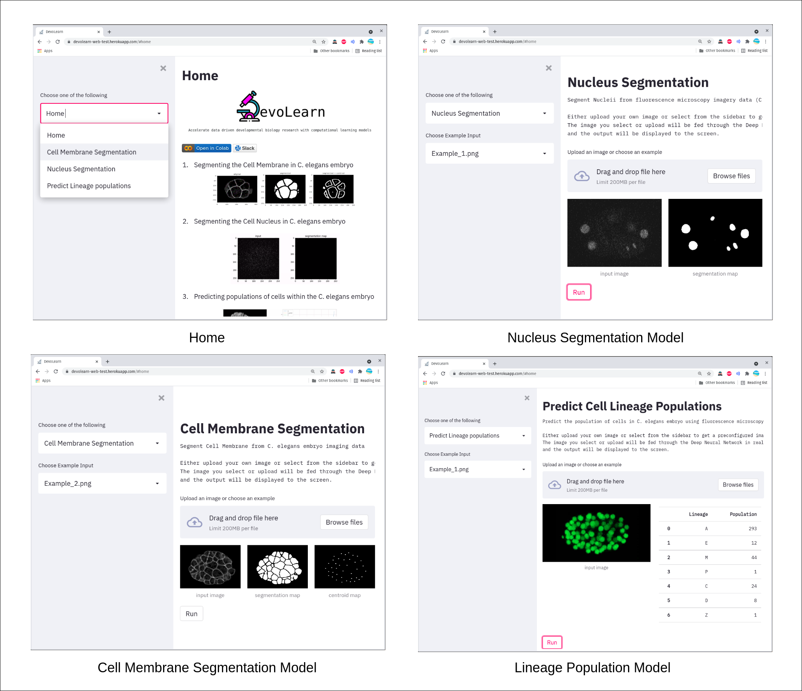

GSoC - Coding Period Week 8
Work Done This Week (July 26th to August 1st)
- Converted the DevoLearn Lineage Population model into ONNX.
- Defined the funtions needed to run the Lineage population model via the GUI.
- Ran tests on Localhost to ensure everything is in place.
- Created the required files for hosting the web-app online using Heroku.
- Procfile - Procfile is a mechanism for declaring what commands are run by the heroku dyno.
- setup.sh - this specifies the commands to be executed to configure the environment before running the app.
- requirements.txt - lists the packages to be installed.
- The web app is now hosted online, feel free to try it out - https://devolearn-web-test.herokuapp.com/
- Link to Code - Github repository

Why did I not use Gradio for building the GUI?
- I could not find a way to host 3 different models in one web-app using Gradio.
- Using Gradio would have led to 3 different web links for the 3 models, which is not convenient.
Planned:
- Add content regarding the models in the web-app.
- Try to render interactive plots (using Plotly) in the GUI.
- Look into ways of running bulk inference using the web-GUI.
- Migrate the web-app to an official DevoLearn repository.
- Move from Travis CI to Github Actions.
- Release a new DevoLearn version.
- Update the DevoLearn starter notebook.